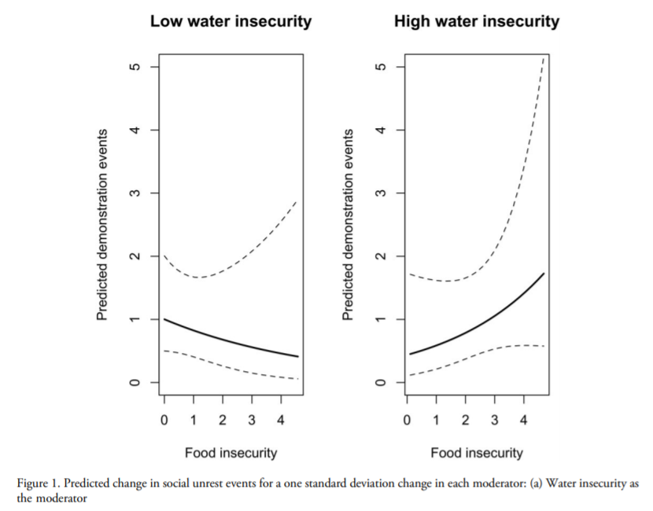
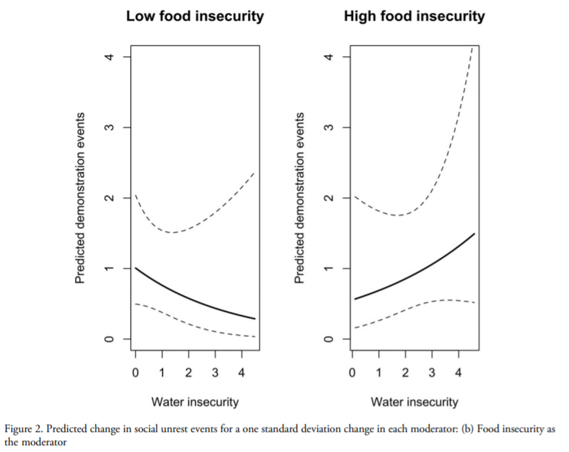
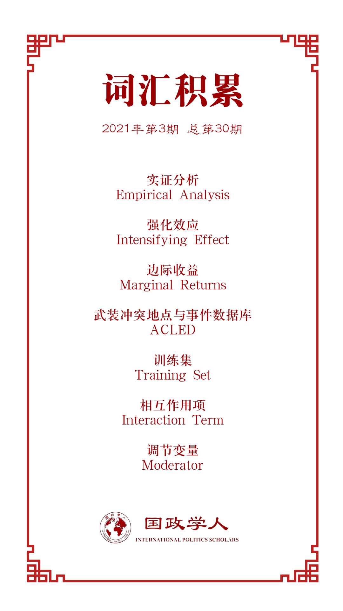

收录于合集

作品简介
【作者】 Ore Koren, 印第安纳大学政治科学助理教授，主要研究领域为国际关系和研究方法论；Benjamin E Bagozzi, 特拉华大学政治科学和国际关系助理教授，主要研究领域为国际关系和政治方法学；Thomas S Benson，特拉华大学政治科学和国际关系在读博士生，主要研究兴趣为环境政治、比较政治、可持续发展等。
【编译】 任潇依（国政学人编译员，北京大学国际关系学院）
【校对】 肖龙
【审核】 常佳艺
【排版】 高思慧
【美编 】方引弓
【来源】 Koren, O., Bagozzi, B. E., & Benson, T. S. (2021). Food and Water Insecurity as Causes of Social Unrest: Evidence from Geolocated Twitter Data. Journal of Peace Research , 58(1), 67-82.
【归档】 《国际关系前沿》2021年第3期，总第30期。
期刊简介
《和平研究杂志》(Journal of Peace Research)是一份跨学科、经过国际同行评议的和平研究领域双月刊，致力于促进全球对于冲突与维护和平议题的关注，由奥斯陆和平研究所(PRIO)进行编辑。自1964年创刊以来，本刊已经刊登了来自50余个国家作者的文章。本刊鼓励采取更具广泛性的和平概念，但内容主要侧重于暴力行为的根源和冲突解决。该期刊2020年影响因子为2.704。
食物和水资源不安全作为社会动荡之因：基于地理定位的推特数据的证据
Food and Water Insecurity as Causes of Social Unrest: Evidence from Geolocated Twitter Data
Ore Koren
Benjamin E Bagozzi
Thomas S Benson
内容提要
食物和水等“主要不安全”(staple insecurities)会导致社会动荡吗？现有研究强调了食物价格与平民动员之间的紧密联系，尽管如此，人们对于环境压力导致城市地区社会动荡的具体途径仍知之甚少。鉴于食物和水等主要不安全因素在全球政策讨论中占据越来越重要的地位，本文将仔细探究食物不安全和水资源不安全对于社会动荡的不同影响及其相互关联，并选择研究可能受气候变化的政治影响最为显著的城市地区。
为了分析这种相互作用，本文利用了肯尼亚城市地区地理定位的推特数据，并部署监督性机器学习方法，分别识别有关食物和水不安全的英语和斯瓦希里语相关数据。然后对数据进行汇总，构建标准化网格单元，以考察可感知的食物不安全如何缓和或加剧水的不安全对社会动荡的影响，反之亦然。 研究结果表明，在影响社会动荡方面，两种不安全感并非独立发挥作用，而是相互加强。 由于气候变化，这两种主要的不安全感在未来几十年都可能增加。相应地，社会动荡也可能变得更加普遍，为人道主义、地缘政治稳定带来伤害。研究同时表明，学者和决策者应当共同解决食物和水的安全问题。
文章导读
01
理论论证
1.环境压力、主要不安全感和社会冲突
现有的研究主要通过三个途径分析环境压力及其对社会冲突的影响：（i）直接；（ii）间接；（iii）威胁倍增。尽管在关于食品价格和社会冲突关联的研究中经常得到分析的是直接途径，环境压力的影响却通常是间接并且前后关联的。一些政府有能力处理物资不足问题，有些政府则缺乏这种能力。因此在食物和水资源危机下，公众怨恨的对象并不是环境压力及其产生的消费冲击，而是政府及其无能。对于第三条途径，环境压力是一个“威胁倍增器”，加剧现有的社会冲突并使之更加暴力化。
评估环境压力的许多经验指标，如食品价格、农业生产率等，都无法动态捕捉环境压力的实时影响，并可能存在测量偏差。为了解决这些问题，本文选择通过预处理和分析多语言的推特数据来进行度量，其优势在于可以表明人们对于主要不安全带来影响的确切看法，并以更广泛的视角来看待主要不安全。使用推特数据研究社会冲突和气候变化已有先例，但是将环境压力方面的数据应用于发展中国家和易受环境压力影响的国家，特别是使用英语以外的语言，应该还是首次。
作者开发了基于推特的、包括英语和斯瓦希里语内容的两个单独指标来分别衡量食物和水的不安全程度，随后根据社会动荡的数据测试这两种实时指标，以评估食物和水资源压力对社会动荡的影响。考虑到受环境压力影响的程度、政体类型、城市化速度、互联网普及率等，作者选择肯尼亚作为发展中国家的典型。
2. 界定食物和水不安全
在多种不安全因素中，本文选择关注现有研究认为最相关的两种类型：食物不安全和水不安全。
食物安全的多个方面都可能与社会冲突分析有关。例如，Koren和Bagozzi就关注了食物的可用性(availability)和获得途径(access)。本文采取的测量方式的一个优点就是以感知的方式准确而全面地反映了食物不安全，无论其发生是由于可用性较低（如粮食作物生产）或是食物获取障碍（如通往城市的运输线被破坏）。 作者第一个假设的第一部分就是：可感知的食物不安全程度与社会动荡频率成正相关。
与食物不安全相比，学界对于水源不安全对社会冲突影响的关注较少。通常，对于水资源不安全的理解与其对农业和食物价格的影响相关。与食物不安全一样，水资源不安全也可能由自然因素、人类行为和人口动态变化引起。Bakker指出了水的不安全产生影响的四个单独途径：（i）饮用水供应；（ii）经济增长；（iii）对生态系统的威胁；（iv）气候变化所引发的可变因素增加。作者认为，生活在发展中国家城市里的个人在面临缺水时会提出异议，因此 第一个假设的第二部分就是：可感知的水资源不安全程度与社会动荡频率成正相关。
3.主要不安全感的强化作用
在分析模型中，应当如何处理食物不安全和水资源不安全之间的关系？一种情况是将两种指标并置，第二种情况是将水的不安全作为衡量食物不安全的工具。但是，这两种方法都可能忽略两种不安全因素之间的相互缓和作用，而这对于研究环境压力对社会冲突的真正影响至关重要。在利用基于推特的指标时，作者能够实时检验这些内部缓和效应，并将其与这些指标的直接和受控制的影响进行比较。
出于以下原因，这些缓和效应值得进一步研究：首先，食物和水的不安全具有高度的相互依赖性，它们可能将负面影响传导给对方，例如干旱会影响粮食作物生长，为了解决食物短缺而将城市居民用水用作灌溉也会加剧水的不安全；另一种可能性是，这两种不安全可能在触发民众负面情绪方面相辅相成，这意味一种不安全的“边际收益”（marginal returns）在另一种不安全中是增加的，而不安全感的加剧会引发对政府无能的更大不满；最后，每一种不安全感都可能影响不同类型的城市人口，如缺乏适当卫生设施的社区更容易受到水不安全的冲击。相比之下，食物短缺带来的影响更为普遍，尽管穷人受到的冲击将不成比例地更大。
本文中，作者考察了食物和水不安全的相互作用，并在结论中简要讨论了其他一些潜在的缓和因素，并概述了未来的研究方向。在上述途径的基础上，作者得出了 第二个假设：更高水平的水资源（食物）不安全感与食物（水资源）不安全感对社会动乱频率的强化效应(intensifying effect)相关。
02
实证分析
1. 数据、变量和方法
在因变量方面，作者使用了2017年8月23日至2019年3月11日间发生于肯尼亚13个最大城市、市镇议会或市政单位的由平民发动的城市骚乱数据。关于骚乱的数据来自武装冲突地点与事件数据库（ACLED），该数据库依赖于非政府组织和媒体的报告，包括多种类型的暴力以及非暴力的社会动乱事件，能够确保作者的模型捕捉到足够多的异质性社会动荡事件。
在自变量方面，作者收集并编码了同时段肯尼亚城市地区有关食物和水资源不安全的个人推文，这些推文至少包含一个英语和斯瓦希里语的相关关键字，并经过了基于上文食物和水资源不安全定义的评估标准的筛选，被认定为不安全的情形包括提及干旱、市场相关物资短缺、食物和（或）水污染、对肯尼亚境外食物和（或）水不安全的关注、对相关基础设施的负面描述、提到需要食物和（或）水援助人群的流离失所、提到因供水污染或干旱而死亡的动物等。
基于上述编码方案，来自英语和斯瓦西里语的各5000条推特被手工编码以作为监督性机器学习算法集合的训练集(training set)，这也是本文作者们的测量方法的核心。然后再利用这两种训练集的分类器对906695条未标记的英语推文和363386条未标记的斯瓦希里语推文进行分类，随后将所有分类后的推特合并到相关的网格单元中，并且进行计数，包括相关食品安全推文的计数、相关水安全推文的计数以及依据相关地理位置和日期获取的所有推文的计数。为了使研究结果更加准确和全面，作者还计算了全部推文计数滞后一周的移动平均值，创建了食物不安全感和水源不安全感的相互作用项(interaction term)，并且考虑到农作物生长季节、周末等特定日期、城市体量、发展程度等等因素。
03
**
**
结果
研究结果支持了现有的研究，即 两个不安全变量都与社会动荡发生率呈正相关 。如果城市居民同时经历食物和水的不安全，社会动荡就会接踵而至，这不仅是因为两种主要的不安全感的存在，也是因为 两者可以相互补强 。正如图1所示，在水资源不安全程度较低的情况下，食物不安全对社会动荡的预期影响是微弱和负面的；而当水资源不安全程度很高时，该预期的影响则是强烈且积极的。当食物不安全作为调节变量时，这些影响仍然存在，如图2所示。

图1：每个调节变量变动一个标准差时社会动荡事件的预期变化：水资源不安全作为调节变量的情况

图2：每个调节变量变动一个标准差时社会动荡事件的预期变化：食物不安全作为调节变量的情况
以上结果为第二个假设提供了额外的支持。当每种不安全感不足以独立引发城市地区动乱时，特别是当人们已经建立起应对气候变化影响的机制时，这两种不安全可以联手产生复合冲击，并为抗议提供足够强的动机。
04
结论
作者的发现说明了使用推特数据、利用不同机器学习方法和统计方法来确定环境压力对社会冲突即时、近期影响的优势。考虑到环境压力和社会冲突之间联系的复杂性，这些数据可以帮助学者解释和预测社会冲突的发生率、强度和传播广度，并了解个人感知特定利益现象的影响途径。
当然，该方法捕捉的只是人们对这些问题的看法，由于对食物和水资源不安全的定义可能因国家和社会背景而异，在其他国家就不大可能再使用同样的标准。同样地，应对未来的危机时也不能完全照搬当下的标准。尽管如此，推特数据和本研究的操作程序能够研究人员准确有效地操控潜在威胁的精确时间和相对地理位置， 这一创新可能对气候—冲突分析以及更广泛的政治暴力研究产生深远影响。
未来研究的另一个可行方向是 更广泛地探讨其他潜在调节变量在社会冲突中的作用 ，例如预先存在的种族仇恨和不满、已经普遍存在的反政府情绪、地理空间特征等。此外，该研究还有一些相关的政策含意。研究结果表明，如果气候变化趋势保持不变并且主要不安全因素在一些国家变得更加普遍，那么本文中提到的强化效应也将变得更加普遍和尖锐。这表明 主要不安全将要并且正在成为一种破坏地缘政治稳定的力量 ，领导人、企业家、科学家和政治活跃者都可以在解决环境问题及控制其影响方面发挥很大作用。同时，这也可能为权力滥用和非民主行为敞开大门。
研究结果还表明， 这种冲击更可能产生非暴力的反应，而不是暴力反应 。这可能是肯尼亚本国的政治特点，也可能是城市地区居民应对主要不安全冲击的方式。当城市居民能够清楚地表达他们的不满时，他们就不需要通过暴力手段寻求政府的有效回应。或许，强调城市居民对于政府应对的不满也可以帮助政府在困境中做出更好的反应。预防主要不安全可能引发的危机需要政府提高应对能力，并且以经济和政治手段向其公民做出可信承诺，在危机发生之前维持食物和水资源供应的稳定，这有助于各国政府独立解决危机，防止暴力并且拯救生命。
译者评述
环境压力与政治动荡和社会冲突之间究竟有怎样的互动关系？本文作者聚焦食物不安全和水资源不安全这两大主要因素，探寻这两大因素与发展中国家城市地区社会动荡之间的关联以及发生作用的具体路径。为了规避传统经验指标所具有的滞后性、测量偏差等缺点，作者选择采用经过精确时空定位的用户推特数据进行综合分析，并且在条件设定、研究程序等方面注意摒除其他因素的干扰。研究结果证明了作者的两个假设，食物和水资源不安全这两个变量与社会动荡的发生呈正相关，两个变量也并非单独发生作用，而是具有相互增强的关系，正是二者的共同作用导致民众走上街头、参与抗议行动。
本文选择的研究视角富有新意，探索气候变化背景下环境因素的变化对于政治环境的影响，并且利用了社交媒体对于社会心理的反映作用，在对食物和水资源安全的定义、社交媒体数据定量研究方法等方面也做出了可贵的探索，为研究政治冲突问题提供了更加广阔的视野。鉴于气候变化带来的负面影响日益显著，食物和水资源不安全对于地缘政治局势很可能产生更加深入和持久的影响。一方面，需要全社会加强环境保护力度，从根源着手缓解粮食和水资源的短缺；另一方面，从政府应对能力入手解决社会冲突的思路理应得到更多的关注，这需要政府努力弥补自身在制度和结构上的弱点，提供更加高效持久的治理方案。
该研究也存在一定的局限性。来自推特数据基于用户的个人认识，有一定主观性；作者在建立气候变化和食物与水资源不安全的因果关系时，似乎没有摒除受较短时期内气候变化影响的情况，而都归为全球长期大趋势的影响。
词汇整理

文章观点不代表本平台观点，本平台评译分享的文章均出于专业学习之用, 不以任何盈利为目的，内容主要呈现对原文的介绍，原文内容请通过各高校购买的数据库自行下载。
好好学习，天天“在看”
国政学人
支持学术公益与知识传播
微信扫一扫赞赏作者 __赞赏
已喜欢，对作者说句悄悄话
取消 __
发送给作者
发送
最多40字，当前共字
上一页 1/3 下一页
长按二维码向我转账
支持学术公益与知识传播
受苹果公司新规定影响，微信 iOS 版的赞赏功能被关闭，可通过二维码转账支持公众号。